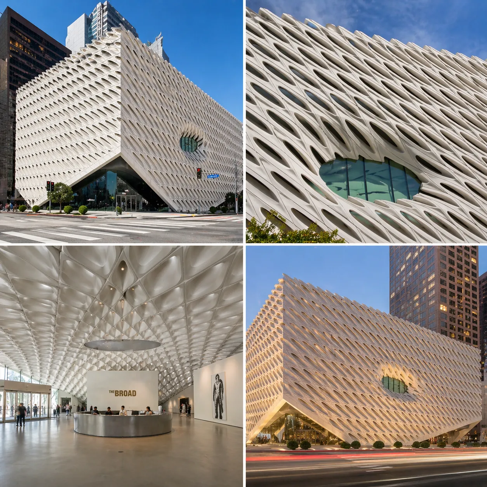
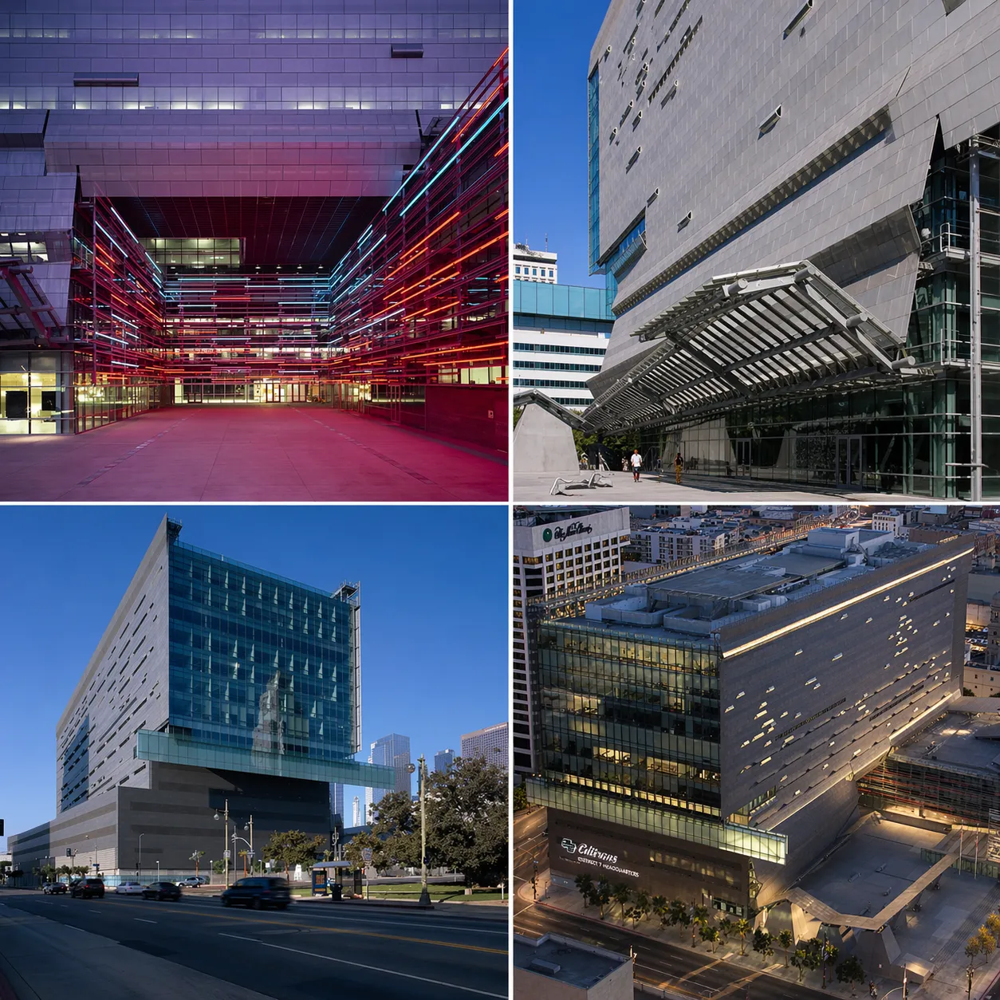
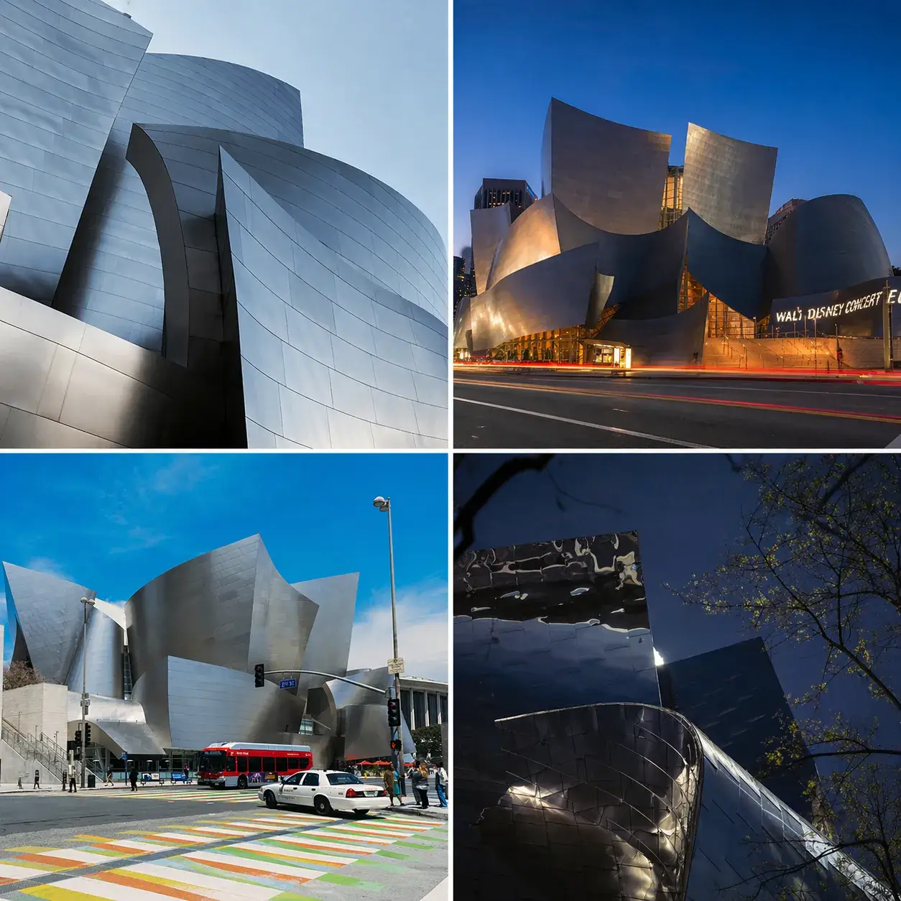
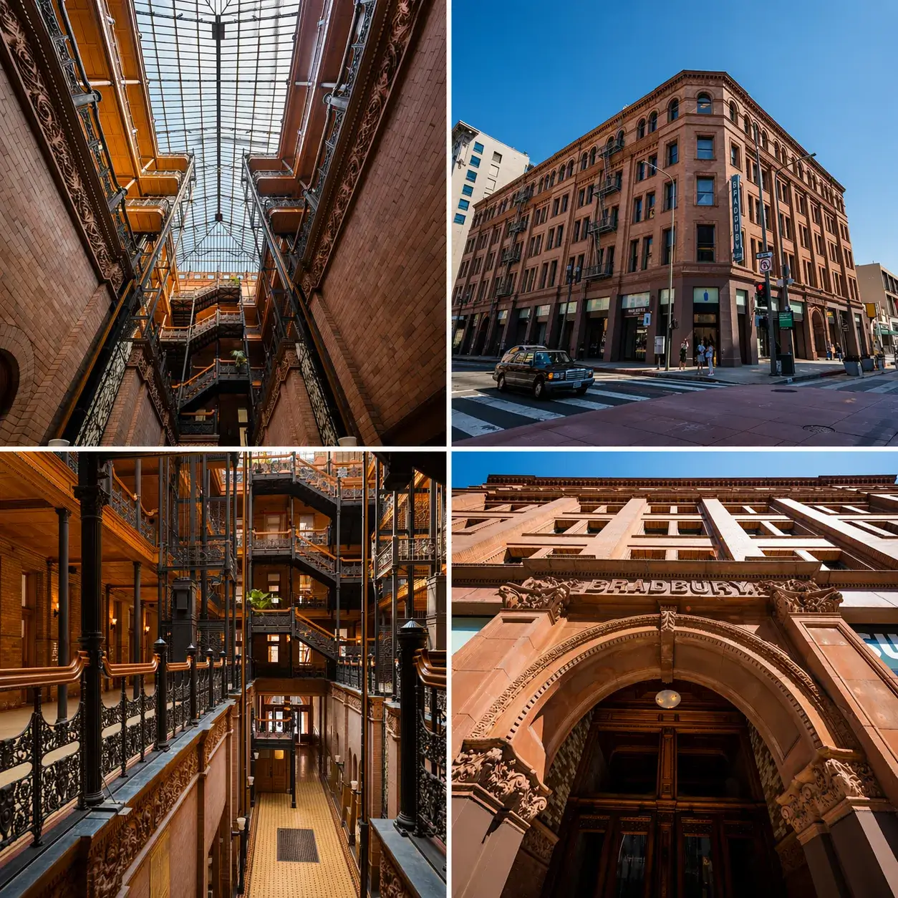
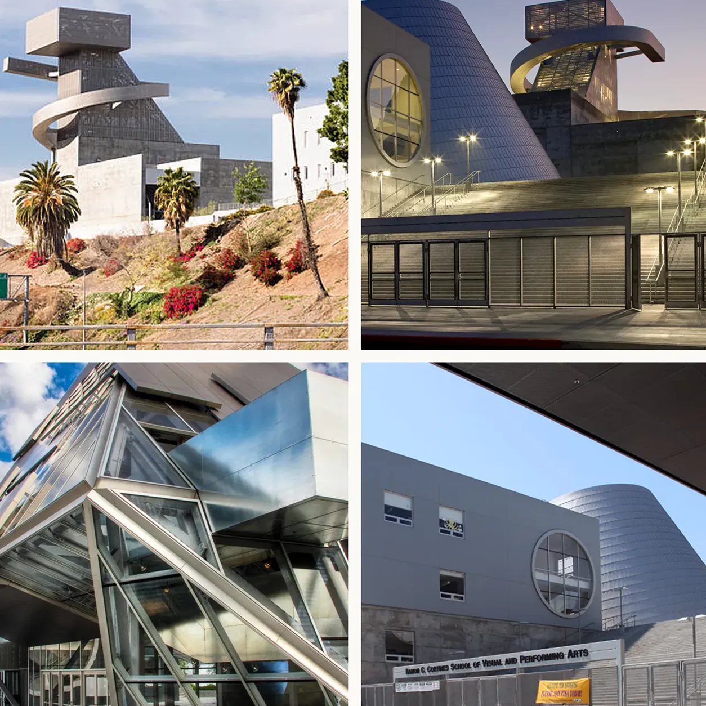

Buildings to notice in
Downtown Los Angeles
From historic landmarks to modern icons, these buildings reveal the design, creativity, and identity of Downtown LA.
Buildings that reveal
the beauty of the city
Downtown Los Angeles is home to buildings that serve civic, cultural, and educational purposes while also showcasing distinctive forms, materials, and design choices. Together, they tell a story about the city and its character.
What to see, andwhat to notice
while you're there.
Each of these buildings carries details most visitors walk past. Here's where to begin.

The Broad
The Broad is one of the most unique buildings in Downtown Los Angeles. Its exterior shell features a honeycomb pattern that softens sunlight entering the museum while also giving the building its distinctive look.
The honeycomb exterior, the soft natural light, and the contrast between the open gallery spaces and the protected art storage inside.
Caltrans District 7 Headquarters
The Caltrans District 7 Headquarters stands out because its outer metal screen is not just decorative. It helps block harsh sunlight, lowers heat inside the building, and gives the outside a layered look that changes throughout the day.
The metal outer layer, the shifting look of the building, and the way the design feels active and modern.


Walt Disney Concert Hall
Walt Disney Concert Hall is one of the most recognizable buildings in Los Angeles. Its curved metal surfaces resemble waves, giving the building a sense of movement and energy.
The flowing shapes, the reflective metal surface, and the way the building looks different depending on where you stand.
Bradbury Building
The Bradbury Building is one of the most historic and visually memorable buildings in Downtown Los Angeles. While the outside is fairly simple, the inside is full of character and detail.
The open central space, the natural light from above, the iron railings, and the old fashioned elevators.


High School #9
This school is a good example of how a building can reflect its purpose through design. One of its most interesting details is the large number 9 visible from above, which connects to the school's name and identity.
Its bold shape, modern look, and the number 9 built into the design.
Want to explore these buildings in person?
Guided tours can help visitors experience Downtown Los Angeles more closely and notice the design details that are easy to miss.
Visitors can also explore Downtown Los Angeles through guided tours. Here are a few options: